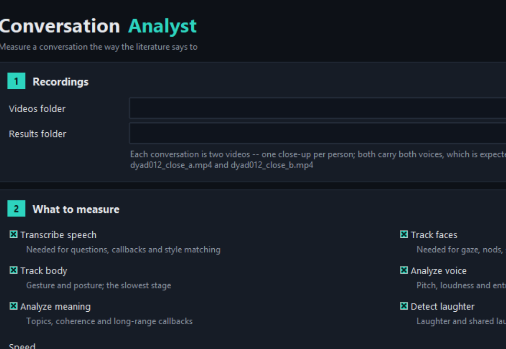
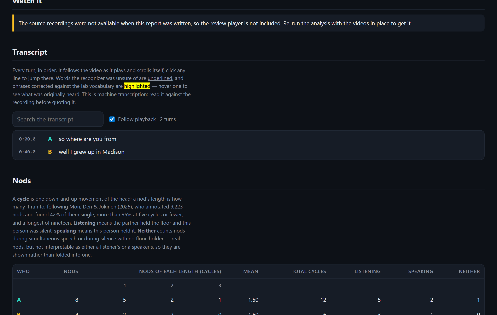
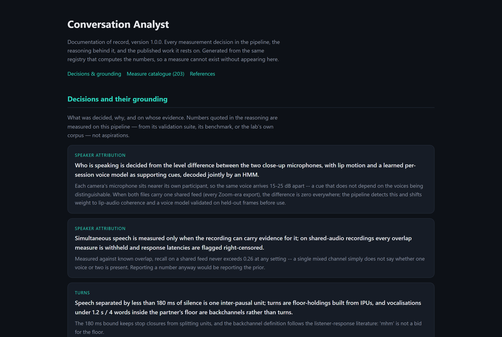

Point it at two videos of a conversation — one per person. It works out who spoke when, how quickly each replied, what they looked at, when they nodded and how many times each nod bobbed, how tightly each listener's responses tracked the partner — 203 documented measures, every decision cited, every detector validated before it is trusted.

Rates hide the facts a human coder writes down. Conversation Analyst reports the count beside every rate, the length of every nod, and who was listening when it happened.
Nod lengths follow the cycle definitions of Mori, Den & Jokinen (2025, PLoS ONE). Calibrated against their 9,223 hand-annotated nods: the pipeline reproduces 42.1% single nods against their 42%. Every nod is labelled speaking / listening — a distinction the nod-typology literature is built on.
A conditional-intensity model (Hawkes 1971) separates two listeners with identical backchannel rates: baseline rate, responses evoked per partner pause, and the timescale of the coupling — validated by parameter recovery on simulated listeners.
Bayesian online changepoint detection (Adams & MacKay 2007) over exchange tempo, with every boundary forced to win an exact Bayes-factor test. Constant-tempo simulations come back as exactly one phase, ten out of ten.
Floor transfers centred near the 200 ms the cross-linguistic literature reports (Stivers et al. 2009), backchannels separated from turns, interruptions from projection, hesitations found acoustically because transcripts lose them.
The full conversation follows playback; uncertain words are underlined; a lab vocabulary fixes names the recognizer has never heard, and every correction is shown with what was originally heard.
What a recording cannot support is withheld with a stated reason — overlap on shared audio, movement from a frozen view — and the verdict grades what remains. A dash is never a zero.

A fitted parameter looks exactly as authoritative as a count while having more ways to be silently wrong — so nothing reaches a report until it survives evidence it cannot grade for itself.
The documentation of record is generated from the same registry that computes the numbers: what was decided, why, and on whose published evidence — Mori, Den & Jokinen; Hadar; Poggi; McClave; Stivers; Hawkes; Adams & MacKay; Ekman; Kendon. A measure cannot exist without appearing there.
Open the methods page
Free and open source (MIT). No GPU needed. Everything runs on your machine — recordings never leave it.
macOS / Linux: unzip, then run
./launch-conversation-analyst.sh (needs Python 3.10+ with
Tk — brew install python python-tk on a Mac). Same one-time
setup on first run.